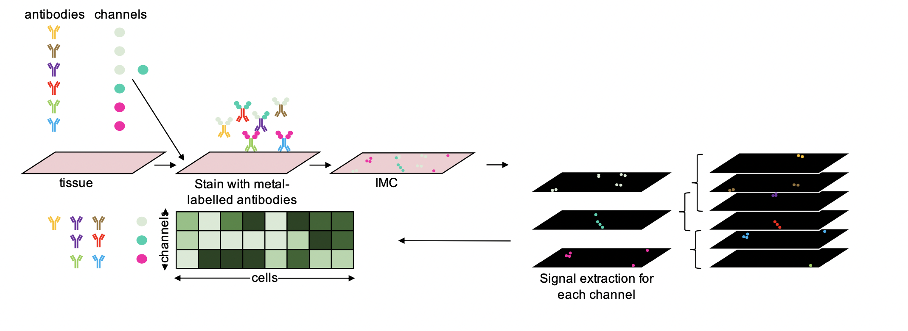
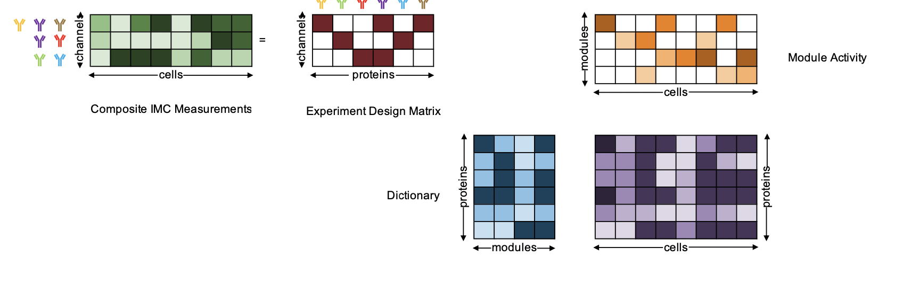

Home

CISI for IMC Data Overview
About The Project

This projects adapts the code from the paper “Compressed sensing for highly efficient imaging transcriptomics.”
published in 2021 in Nature biotechnology by Cleary, Brian et al. to IMC data.
The core idea of the paper is to use compressed sensing to recover individual
protein expression levels from composite measurements (e.g. using the same channel/metal-isotop
to measure multiple proteins). The advantage of this is that less channels are needed
to measure the same amount of proteins as in a normal IMC run.
For more information on the steps of CISI for IMC and how it works, go to
Usage.
Built With
Getting Started
This project contains the code to run CISI on IMC data and to run a parameter sweep
useful for the setup of a composite experiment.
(All the scripts used to analysis the code are present in analysis/ and the resulting .html files in
results/reports
or available on the website)
To get a local copy up and running follow these simple example steps.
Prerequisites
To install the environment with all the necessary python packages to run the CISI code and the snakemake parameter sweep you need to download conda.
Installation
-
Clone the neccesary folders in the repo.
sh git clone --depth 1 --no-checkout https://github.com/BodenmillerGroup/CISI_IMC.git cd CISI_IMC git sparse-checkout set code analysis/parameter_sweep git checkout -
For downloading all the packages into a conda environment, follow instructions 'i.'. If the CISI code is only accessed via the parameter sweep, there is the option of installing a conda environment only containing snakemake and then running the Snakefile for the parameter sweep using the --use-conda parameter. For this, follow option 'ii.'
- Create cisi_imc_env conda environment.
sh conda env create -f analysis/parameter_sweep/envs/cisi_imc_env.yml conda activate cisi_imc_env - Create conda environment only containing snakemake.
sh conda create -n snakemake_env -c bioconda snakemake=7.17.1 conda activate snakemake_envWarning When running the parameter-sweep, add parameters--use-conda --conda-frontend condato the snakemake call.
- Create cisi_imc_env conda environment.
Usage
CISI for IMC
As an input, CISI expects an anndata object containing an expression matrix with dimensions: cells x proteins. For this steinbock can be used to segment the IMC data, and the results can then be read into an R SingleCellExperiment please refer to IMCDataAnalysis. To convert the subsequent SingleCellExperiment to an anndata object the function writeH5AD() from zellkonverter can be used.
The anndata object is used for training, validation and testing (split according to set parameters). Additionally, there are a lot more parameters that can be set. The most important parameters are listed underneath with an explanation of their function. For a more complete list of parameters, please refer to the code of the function train_dictionary_and_compositions.py.
The main function is the train_U_and_A() function, which takes the anndata object and computes a dictionary U, a experiment design matrix A/Phi and test statistics from simulated data using part of the training data kept solely for testing purposes.
(training_res, training_res_no_noise,
U_best, Phi_best, X_test) = train_U_and_A(anndata_object,
outpath,
split_by='roi',
k_cv=4,
test_set=('name_of_test_rois'),
lda1=3,
normalization='paper_norm',
d=80,
nmeasurements=10,
maxcomposition=3,
save='no_noise',
analysis_normalization=True,
best_A_method='mean')
- X_input: anndata object containing numpy array X (cells x proteins) Will be divided into: training, validate and test set
- outpath: Specify where output files should be saved to (used in all fnc)
- split_by: either split by 'roi' or 'percentage' (default: 'roi')
- k_cv: number k cross-validations (default: 4) if split_by='roi, k_cv needs to be smaller and a multiple of the number of rois (not including the test roi)
- test_set: tuple of rois used as test sets with the same names as in the anndata object column sample_id (if split_by='roi', then test_set must be set and test_size can't be used)
- lda1: (in mode 1) the number of nonzeros per column in W, also called sparsity (k)
- normalization: How data is normalized before running smaf (default: paper_norm) Options: paper_norm (normalization used in paper, protein-wise), min_max_norm (protein-wise) or none (from initial analysis recommended)
- d: the number of features (columns) in the dictionary U
- nmeasurements: number of channels (# rows of A) (default: 10)
- maxcomposition: maximum times each gene is represented (mode G), or max genes per composition (mode M) (default: 3)
- analysis_normalization: If true then normalization is used before simulating decomposed data and is compared to true data normalized the same way (default: True)
- best_A_method: Method to evaluate best A/Phi 'min', best A chosen according to highest worst performing protein measured by protein-wise pearson correlation 'mean', best A chosen according to highest mean protein-wise pearson correlation (default)
- save: Which decomposed X is saved. Either the X decomposed from noisy simulated data or simulated data without noise (default: no_noise)
A more comprehensive example script can be found here.
This function will create in the specified output path several files. It creates two files with result statistics from simulated data once adding noise and once without any noise (simulation_results.txt, no_noise_simulation_results.txt), the decomposed anndata object from simulated data from either noisy or without noise simulation as specified by the user (X_simulated_0.h5ad), the ground truth anndata object subsetted to the test set, e.g. the same cells as in the decomposed simulated anndata object (X_test.h5ad ), the computed dictionary U (gene_modules.csv), the experiment design matrix A (version_*.txt), and two other files, which could be used to correct decomposed expression values (conditional_probability.csv, correlations.csv has not been tested yet).
The train_U_and_A() calls on three functions: smaf() to compute the dictionary U, compute_A() to compute the best experiment design matrix and analyze_U_and_A() to analyze the results. They can all be called individually as well.
To decompress composite IMC data, the function decompress() can be used. The most important parameters are mentioned underneath. For more parameter options, refer to the code directly.
X_decompressed = decompress(y, U, phi)
- y: np.array containing composite measurements (channels x cells)
- U: dictionary from CISI training
- phi: experiment design matrix A/Phi from CISI training
Warning Be sure to have proteins/channels in y, U and phi in the same order, otherwise the matrix multiplications in CISI will lead to wrong results.
Parameter Sweep
The parameter sweep is build using snakemake. It sweeps the parameters 'k' (sparsity), 'd' (dictionary size) and 'm' (number of measurements/channels to compress proteins into) for the given ranges. For all these runs, the most important default parameters ('split_by', 'k_cv', 'test_names', 'normalization' , 'maxItr', 'maxcomposition', 'save', 'analysis_normalization', 'best_A_method'), as well as the subset of proteins of interest (which will be compressed) in the anndata object can be set. Additionally, some input and output paths can be specified.
Therefore, before running the parameter sweep a config yaml file needs to be created. For this use one of the example config in the analysis/parameter_sweep folder and adjust the parameters accordingly.
The parameter sweep can then be deployed from the parameter_sweep folder using:
snakemake --cores <NUMBER_OF_CORES> --configfile <YOUR_CONFIG>.json --keep-going
Or if using a conda environment only containing snakemake with the flags --use-conda --conda-frontend conda.
snakemake --cores <NUMBER_OF_CORES> --use-conda --conda-frontend conda --configfile <YOUR_CONFIG>.json --keep-going
This will create all the outputs from CISI's training function into the specified output folder for each parameter combination, a summary .html report in the specified reports path as well as an automatic snakemake report containing additional snakemake statistics and configurations in the same folder.
Note For more information on available flags to run snakemake, refer to command line interface snakemake.
License
Distributed under the MIT License. See LICENSE for more information.
Contact
Leonor Schubert Santana - leonors@student.ethz.ch
Project Link: https://github.com/BodenmillerGroup/CISI_IMC
Acknowledgments
- Prof. Dr. Bernd Bodenmiller
- Dr. Nils Eling
- Tsuyoshi Hosogane